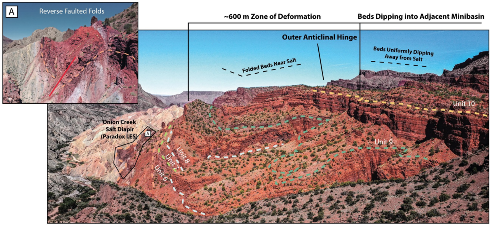
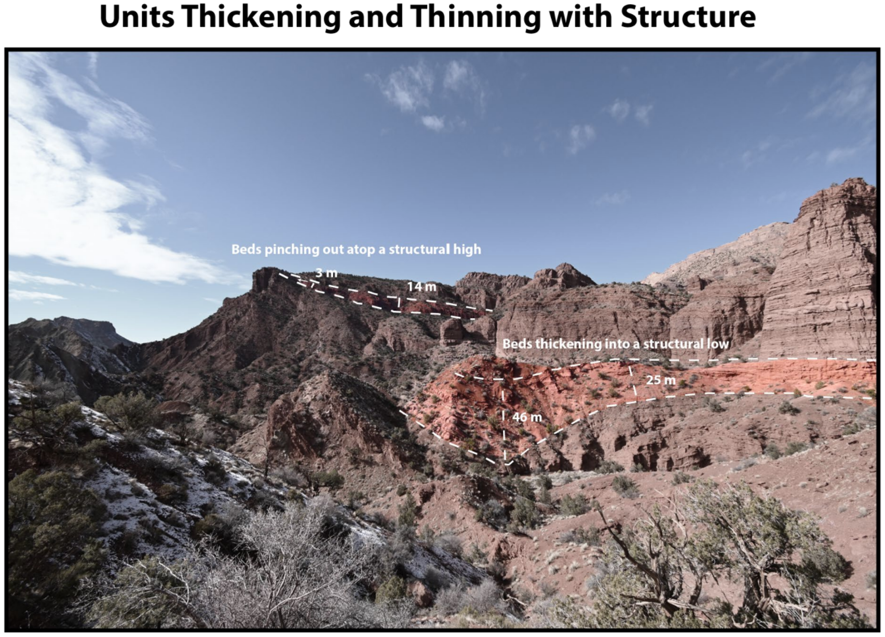
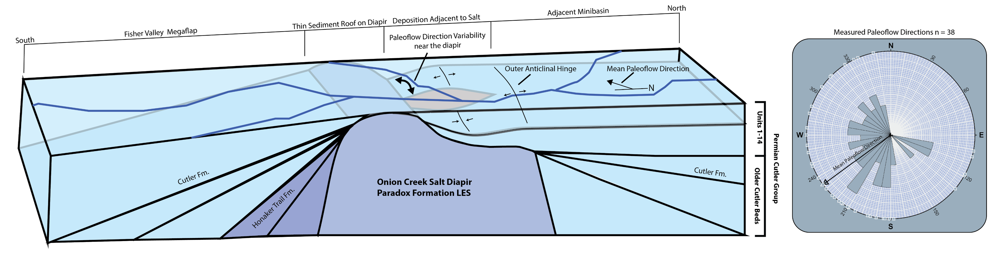

Many people have visited this outcrop over the years and described different models to explain observations. In this example we recognize 4 distinct zones that surround the diapir and expose different salt-related features. The first is the Northern Margin. Our work leads us to interpret the deformation in this area as syndepositional and describe the salt structure as a burial wedge. Zone 2 comprises the western and southwestern margins of the diapir, which contains faulted blocks of mesozoic strata surrounding small slivers as salt. Our work suggests that these collapse blocks surround a salt horn. Zone 3 is the south eastern margin. Here are exposed a pennsylvanian-permian-aged megaflap and collapsed blocks of mesozoic strata. Zone 4, the eastern margin, contains cenozoic strata that onlap the diapir. The first, second, and third zones are highlighted in this 3D model.

At this first stop, near the easternmost edge of the northern margin, we can observe some examples of near-diapir deformation in Permian-aged strata. Large wavelength asymmetrical folding is localized to within 600m/2000ft of the diapir contact. Beyond that, strata dip homoclinally into the adjacent minibasin. Immediately at the diapir sediment contact, there is a single instance of a small wavelength tight reverse faulted syncline.

Sediment thicknesses measured in this canyon show that deformation was likely syndepositional and that fold synclines formed pockets of diapir-parallel accommodation space. The anticline in the background shows sediment pinching out at its top, showing that time-equivalent sediment thicknesses varied significantly along strike. Diapir-perpendicular radial faulting also likely had an influence on sediment accumulation with down dropped blocks serving to create more accommodation space next to upheld blocks.

At Stop #4 we can see two things very clearly; the first that fold geometries vary signifcantly along strike, and the second that the diapir-sediment contact can vary from onlap (Box A) to an abrupt contact where strata adjacent to the diapir is folded (Box C)

At this last stop on the northern margin of the diapir we again see clear along-strike heterogeneities in folding. Sediment is also shown to thicken westward into the adjacent minibasin, further supporting the hypothesis that stratal geometries were controlled by relationships between sediment input and diapiric rise rates. Lastly, outline in the white box, we can see the edge of the only fracture zone within permian strata outcropping adjacent to the Onion Creek Salt Diapir. In the drone model above, you can trace trace this fracture zone to younger, triassic aged sediments that are part of the collapsed diapir roof. This suggests that this fracture zone is unique to the younger collapsed phase of the history of the diapir, and not the older Permian-aged folding that was influenced by halokinesis.

This brief webpage should have shown varying scales of syndepositional folding and diapir-sediment contacts adjacent to the diapir. Measured section data and structural restorations integrated with potential fields data show that the Permian-aged sediments outcropping on the North Side of the Onion Creek Salt Diapir likely onlapped the diapir and deformed syndepositionally. Syndepositional deformation likely consided of diapir parallel folding and diapir perpendicular steep radial faulting. These two processes occurred continuously throughout the evolution of the diapir margin and contributed to along strike and along dip variations in sediment accumulation and facies.